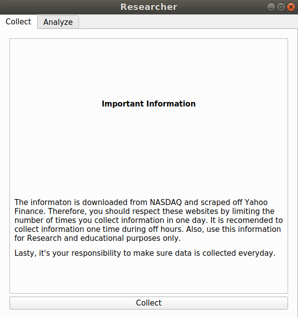

Researcher
Summary
I have created a large Python3 stock analysis program over the summer of 2018. It scrapes and processes data of over 6000 US stock tickers from multiple websites, and it stores the data in a SQLite3 database. After given some calculation settings, it generates a score for every stock and displays it along with other information in a table to determine which stock fits the user’s needs. The scraping process uses multithreading and multiprocessing for maximum efficiency, and I use PyQt5 to implement a UI. If the program were ever to get popular, I fear it would be blocked by one of the sites being scraped, so the program repository is not publicly available.
Purpose of Project
I wanted use the computing science skills I learned at the U of A and develop them further. I also thought it would be a good idea to have a project to show off to recruiters. The reason why I developed the stock analysis program and not something else was because I wanted to create something unique. More specifically, I wanted a program, that I don’t have access to without spending money, that helps me with a task. Researcher is a perfect fit. It helps me with long term investments for free, and I could not find something similar online.
Features
There are two parts to this program: collection and analysis. The collection part mainly involves the collection of all the stock data for the current day. The cool thing about the collection process is that it can either be run with a the GUI or on a terminal using the exact same lines of code. The analysis part uses the data collected and options given to it by the user to produce a score for all stocks on the chosen day.
Collection PartBefore any analysis can be done, data must be collected. The user first navigates to the page displayed below by clicking the "collect" tab at the top right. It is also worth noting that when starting the program this page is displayed first.
The user must press the "collect" button to start. This action switches to the collection progress screen (displayed below) and starts the scraping session.

The scraping session first downloads and parses a csv file from the official NASDAQ website which contains a list of all public US stock tickers and the respective sector and industry the stock is considered to be in. Then it starts scraping 2 Yahoo Finance pages and makes one IEX API call for every ticker read from the csv file. The API call is used to get the stock’s price history in order to calculate its RSI while the rest of the measures are scraped off the Yahoo Finance pages. The Yahoo Finance/API collection process will take about 2 hours due to the reactive limiter I created for the scraping session (More about why later). This entire process is multithreaded and multiprocessed to increase and/or maintain the speed. The main process creates a collection process which in turn creates multiple threads for scraping after parsing the csv file. Every stock that has had all of its raw data collected is passed to a refinery process, which was initially created by the collection process. The refinery process cleans/formats the data, calculates some measures, and inserts the stock measures into the appropriate table in the database. The scraping session can be cancelled any time, if the user presses the "stop" button or presses the close button at the top right. All the threads/processes can be stopped because I implemented a kill signal that all threads/processes listen for. Once the scraping session is cancelled, all data created from this scraping season are also deleted, since it would be incomplete and that would mess things up. The log, in the middle of the screen, also has a couple of features. The main purpose of the log is to print out all successes and errors which you can scroll through. A feature of the log is that it holds a maximum of 500 lines to maintain CPU performance. Since the log only holds 500 lines, all errors are also appended to an error text file to be read later. The log also keeps the scroll bar at the bottom, if the scroll bar has not been touched or the user has scrolled to the bottom. Lastly, once the scraping session is done(ie. the progress bar at the top has reached 100%) or has been killed, the user presses the "finish" button to go back to the original screen.
Analyses PartIf at least one days worth of stock data stored in the database, then analysis can be done. It should also be worth noting that analysis can be done while the scraping session is active. The user must press the "Analyze" tab at the top left to get bunch of options shown below.
With "Get measures from" you can select any day stored in the database to analyze. The "Stock performance on" can be used to see the percent gain/loss the stock has achieved past the "Get measures from" date. The "Analyze" section gives the user a chance to analyze a certain sub group of stocks. Lastly the "Measure Strengths" section gives the user the power to select which measure will have the most impact on each stock’s score. The down arrow means the lower the value the better and the up arrow is the opposite. These arrows can be switched by clicking them. The numbers beside the arrows is the percent strength of the measure. The measures should sum to a 100%, but it is not required. The NTS and NSS are measures that I have sort have developed myself. NTS stands for net transaction score where it basically represents how many times insiders buy shares of there company’s stock. NSS stands for net share score where it basically represents how many total shares are bought by insiders. Both scores make sure that stocks with lots of insider trading do not have an “advantage” over stocks with low amounts of insider trading. Here is how NTS is calculated.
when \(p_t \ne 0\) or \(s_t \ne 0\)
$$NTS = {(p_t-s_t)*100 \over{p_t+s_t}}$$
\(p_t\) = The number of purchase transactions
\(s_t\) = The number of sale transactions
Here is how NSS is calculated.
when \(p_s \ne 0\) or \(s_s \ne 0\)
$$NSS = {(p_s-s_s)*100 \over{p_s+s_s}}$$
\(p_s\) = Total number of shares bought
\(s_s\) = Total number of shares sold
After the user has selected the options, the "Analyze" button should be pressed. This brings up a new a bigger window shown below.

There are two tables shown. The top table shows the basic statistics of the group of stocks which are mean, Q1, median and Q3. The bottom table shows the main information the user is interested in. Each cell, in the main table, has a number contained within curly braces which shows the rank of the stock's specific measure compared with the other stocks of same measure. The number beside the rank number is the actual value of the measure for the specific stock. For each stock a score is produced with the ranking and strength of each measure. By default, the stocks will be ordered by score, with the highest score will be placed at the top. With this score the user can determine which stock to buy. The score formula is shown below.
$$Score = \sum_{i=1}^m{(n-R_i) * S_i * 10^4\over{n}}$$
m = The number of measures
n = The number of stocks being compared
\(R_i\) = The measure's rank
\(S_i\) = The measure's percent strength represented as a decimal
Lastly the user can resize top table or bottom table by clicking and dragging the white line between the tables. If the line is dragged all the way to the top the statistics table is hidden, and if it is dragged all the way to the bottom the main table is hidden. If the user clicks the measure title, x, of any column, the stocks will reorganize so that stocks with the highest ranks of measure x are displayed first. If the user clicks the measure x’s title again, stock ordering will be reversed. For example, in the below picture, I have hidden the statistic table and I have clicked the ROE column title once.
Technologies used
Python 3Python 3 was the only language I used to create this program. As usual, I did not have any difficulties using it.
PyQt5This was the library used to create the GUI. I mainly made the GUI in QT designer as I could create the interface very quickly. After I created the GUI in the QT designer, I used pytz to convert the QT designer files into messy python code. One thing I didn’t like about this method was that it was hard to make minor changes to the interface and maintain the python GUI code. One minor problem I had with PyQt5 was that I felt some widgets were missing some necessary functionalities. However, it was easy to create sub classes that had these functionalities.
SQLite3All stock information are stored in a SQLite3 database. All stock information belonging to a certain business day are stored in one table named that day’s date. So a new table is created every new business day after the collection is complete. I felt this storage method was better than storing everything in one table or splitting the stock information into multiple measure tables. If everything was stored in one table, the table would gain 6000+ lines of stock data every business day. That means the search efficiency may slow down after a year of continuous use. If the stock information was split into multiple measure tables, it would just be like storing everything in one table, but doing it for 12 tables, which is even worse! The one benefit of the measure splitting over day splitting would be that some storage efficiency could be achieved as duplicate values could be stored in a date range for some measures only. With the method I used, the system would only have to search through 261 tables after one year of continuous collection, and the search time within tables will always be very similar and quick.
RequestsIt got the HTML from Yahoo Finance to be parsed. I have had no problems with it.
Beautiful Soup 4It used Beautiful Soup to parse the data and I felt it was very easy to use
Complications and Lessons Learned
There were a couple of complications I faced. The first one was choosing the correct library for scraping the
Yahoo Finance stock pages. When I first started, I chose the first library that could achieve my goal of stock
collection without doing much research. The first library I used was Selenium. I developed a scraping system
with selenium. However, it was way too slow due to the fact Selenium would load the every web page on a chrome
browser. With such limited speed I could only scrape a limited number of Yahoo Finance pages. Then I tried
Scrapy. I learned my lesson with Selenium and I did research and a couple of simple tests to compare Scrapy’s
speed with Selenium. It was a lot faster. So much so, that I could collect all stock information within a
reasonable amount of time. After developing a scraping system with Scrapy and merging it with the rest of my
program, I learned I could not restart the scraping session without rerunning the program again. This is because
the library was using global variables that could not be reset for some reason. This was a big problem as the
user should be able to restart the scraping session. It turned out that Scrapy was mainly built for web crawling
and not web scraping. After doing lots of research and tests I finally started using the requests library which
is still being used by the program today. There were multiple lessons I learned on how to pick the right
library. First you should check what the library is built for or end goal is. Then you should check if the
library is actively supported by a company or community; the key word is active. Next, you should check if the
library is buggy by searching “library x is buggy” with Google. Lastly do some tests to make sure it can meet
your program requirements.
Another complication I faced was optimizing the scraping session. As mentioned above choosing the right library
effected how fast I could scrape Yahoo Finance pages. Even with the requests library I still felt I could
improve the speed. After doing some optimization tests I realized I should multithreaded and multiprocess the
scraping session. I learned a lot about optimization on how to mulithread and multiprocesss a program thanks to
developing Researcher.
With such optimized scraping code, Yahoo Finance did not like how fast I was going. Like mentioned earlier, I
did do some speed tests early on and Yahoo Finance did not block me. However, after scraping a couple days worth
of data, they started blocking me if I went to fast. Initially it took 20 minutes to scrape all the pages, but
after Yahoo Finance wanted me to slow down, I scrape everything in 2 hours now. So I learned that I should
generally limit how fast I should scrape a site.
Things that could be improved
I would probably try to fill the page where the user can start the collection, as it feels way too empty. Furthermore, I think more advanced statistic should be added to the top portion of the analysis window, like correlation. If the program was funded, I would probably only use a paid API for stock information.
FAQ
Why didn’t you exclusively just use a free API?The limited free APIs I found, seemed incomplete and inaccurate. I trust Yahoo Finance data and it has data such as insider trading that free APIs do not have. I like Yahoo Finance so much, that I am willing to wait 2 hours for the collection to complete. However, the IEX API I use for the price history for each stock seems to be improving monthly. If IEX improves enough, I might switch to it.
Does the program also work for OSX and Windows?Theoretically it should work for both operating systems, but I have not done the testing. The main problem might come from PtQt5 because visuals are OS dependent. Moreover, the multiple threads and processes used by the scraping session might also be a problem as each OS might handle them differently.
What is the scraping speed of this program?It was initially 20 minutes for a couple of days, but Yahoo Finance did not like how fast I was going and started blocking me based off how fast I was going
If Researcher was funded what would you change?I would only use a paid API for stock information. That would be the only feature that would need funding.
What does Yahoo Finance think of this program?I have never contacted them directly, but they don’t seem to mind me scraping stock information from the site. They just don’t want me to scrape the site too fast. If I released this publicly, it might be a different story though.